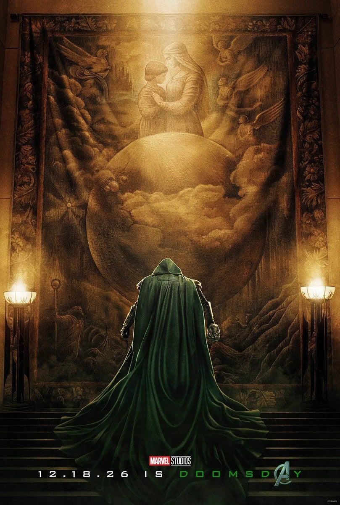

The Fantastic Four: First Steps
como antagonista
Vocês não pode corre de seu destinoVictor von Doom, mais conhecido pelo alter ego Doutor Destino (no inglês: Doctor Doom), é um personagem fictício e um supervilão que aparece nas histórias em quadrinhos publicadas pela editora Marvel Comics. Foi criado por Stan Lee e Jack Kirby, tendo sua primeira aparição na HQ Fantastic Four .
como antagonista
Vocês não pode corre de seu destino
como o antagonista principal
Vocês não pode corre de seu destino